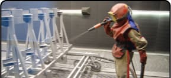
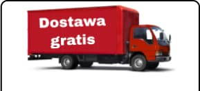
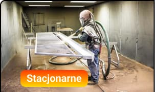
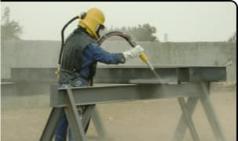
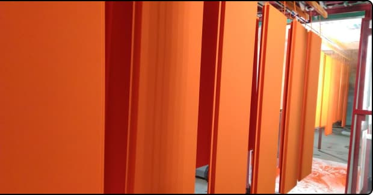

MALOWANIE PROSZKOWE
RÓŻNEGO TYPU POWIERZCHNI I
PIASKOWANIE w TYCHACH
Wymiary pieca:
2 × 2,6 × 2,5 m
(Długość x szerokość x wysokość)
Wymiary komory
do piaskowania:
10 × 3 × 4 m
(Długość x szerokość x wysokość)
Zalety
-
Największy piec
W Tychach mamy największy piec do polimeryzacji farby o rozmiarach: 12 × 2,6 × 2,5 m.
-

Piaskowanie
Wymiary komory do piaskowania: 10 × 3 × 4 m. Piaskowanie wykonujemy stacjonarnie lub na wyjeździe.
-
Duży wybór farb
Malujemy farbami proszkowymi we wszystkich kolorach palety RAL, która zawiera ponad 1600 kolorów.
-

Dostawa gratis
Odbierzemy i zwrócimy już pomalowany sprzęt w wyznaczone miejsce za własny koszt do 50 km od Tych.
Usługi
-
Malowanie proszkowe
Malowanie proszkowe to skuteczna metoda pozwalająca uzyskać trwałą, odporną na czynniki zewnętrzne (ekstremalne temperatury, agresywne środowisko i promieniowanie ultrafioletowe) i wytrzymałą powłokę warstwy ochronnej i dekoracyjnej.
Wymiary naszego pieca do polimeryzacji farby:
długość — 12 m; szerokość — 2,6 m; wysokość — 2,5 m.W ten sposób można pomalować:
Konstrukcje regałowe; Sprzęt AGD; Meble biurowe; Akcesoria ogrodnicze; Akcesoria samochodowe; Profile metalowe różnego rodzaju; Bramy i tak dalej.
Cena od 280 zl / m²
-


Piaskowanie
Piaskowanie jest jedną z najskuteczniejszych metod obróbki powierzchni, która służy do usunięcia rdzy i starej warstwy farby/lakieru. Dużą zaletą tego typu obróbki jest możliwość dotarcia do trudno dostępnych rogów lub zakrzywień. W naszej firmie piaskowanie można wykonać na dwa sposoby:
Stacjonarna obróbka wyrobu w komorze do piaskowania o wymiarach: długość — 10 m; szerokość — 3 m; wysokość — 4 m.
Piaskowanie wyjazdowe, oznacza to, że nasi pracownicy przyjadą do Ciebie w wyznaczone miejsce i w wyznaczonym terminie z przenośną piaskarką i obrobią potrzebną Ci powierzchnię.
Cena od 280 zl / m²
O NAS
Firma MNK-KOLER świadczy usługi piaskowania i malowania proszkowego różnego rodzaju powierzchni. Nasi specjaliści są gotowi omówić z Państwem indywidualne warunki cenowe, pomóc w organizacji dostawy wyrobów oraz udzielić właściwych zaleceń w zakresie doboru koloru i sposobu przygotowania wyrobu do malowania proszkowego.
